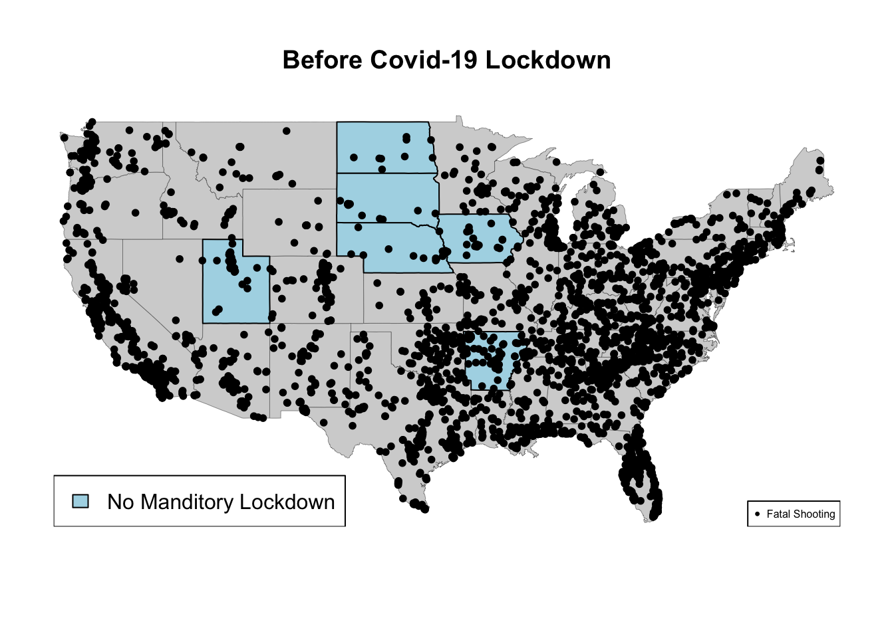

id name date manner_of_death armed armed_agg
1 3 Tim Elliot 1/2/2015 shot gun Gun
2 4 Lewis Lee Lembke 1/2/2015 shot gun Gun
3 5 John Paul Quintero 1/3/2015 shot and Tasered unarmed Unarmed
4 8 Matthew Hoffman 1/4/2015 shot toy weapon Toy Weapon, BB Gun
5 9 Michael Rodriguez 1/4/2015 shot nail gun Toy Weapon, BB Gun
6 11 Kenneth Joe Brown 1/4/2015 shot gun Gun
age gender race race_name city state signs_of_mental_illness
1 53 M A Asian Shelton WA TRUE
2 47 M W White Aloha OR FALSE
3 23 M H Hispanic Wichita KS FALSE
4 32 M W White San Francisco CA TRUE
5 39 M H Hispanic Evans CO FALSE
6 18 M W White Guthrie OK FALSE
threat_level flee body_camera longitude latitude is_geocoding_exact
1 Extreme Not fleeing FALSE -123.122 47.247 TRUE
2 Extreme Not fleeing FALSE -122.892 45.487 TRUE
3 Significant Not fleeing FALSE -97.281 37.695 TRUE
4 Extreme Not fleeing FALSE -122.422 37.763 TRUE
5 Extreme Not fleeing FALSE -104.692 40.384 TRUE
6 Extreme Not fleeing FALSE -97.423 35.877 TRUE
#Convert the `date` column to Date format so can extract the yearFatalShootingsStats$date <-as.Date(FatalShootingsStats$date, format ="%m/%d/%Y")#Made new column for year as an intFatalShootingsStats$year <-as.integer(format(FatalShootingsStats$date, "%Y"))
#Analyze 2015 as a test rundata_filtered <- FatalShootingsStats[FatalShootingsStats$year ==2015, ]#Grab the total amount of times certain races are in the dataasian_count <-nrow(data_filtered[data_filtered$race_name =='Asian', ])black_count <-nrow(data_filtered[data_filtered$race_name =='Black', ])white_count <-nrow(data_filtered[data_filtered$race_name =='White', ])hispanic_count <-nrow(data_filtered[data_filtered$race_name =='Hispanic', ])native_count <-nrow(data_filtered[data_filtered$race_name =='Native American', ])other_count <-nrow(data_filtered[data_filtered$race_name =='Other', ])unknown_count <-nrow(data_filtered[data_filtered$race_name =='Unknown', ])#Created a data.frame with counts so can plot themrace_counts <-data.frame(race =c("White", "Black", "Hispanic", "Asian", "Native", "Other", "Unknown"),count =c(white_count, black_count, hispanic_count, asian_count, native_count, other_count, unknown_count))#Created a pie chartpie(race_counts$count, labels = race_counts$race, main ="Proportion of Different Races in Fatal Shootings in 2015",col =rainbow(length(race_counts$count)))
Total Fatal Shootings Average Age No Body Camera Yes Body Camera
2015 986 36.7 911 75
2016 904 36.6 767 137
2017 913 36.6 808 105
2018 866 37.5 757 109
2019 880 38.1 759 121
2020 879 37.3 719 160
2021 692 37.0 536 156
2022 280 37.7 225 55
percent of officers with body camera percent of victims armed with gun
2015 0.07606491 0.5618661
2016 0.15154867 0.5320796
2017 0.11500548 0.5772180
2018 0.12586605 0.5438799
2019 0.13750000 0.5761364
2020 0.18202503 0.6211604
2021 0.22543353 0.6141618
2022 0.07947977 0.2225434
percent of victims unarmed percent of victims armed with vehicle
2015 0.09533469 0.004056795
2016 0.06747788 0.011061947
2017 0.07557503 0.006571742
2018 0.06351039 0.056581986
2019 0.05681818 0.057954545
2020 0.06029579 0.053469852
2021 0.03034682 0.036127168
2022 0.01156069 0.011560694
percent of victims with mental illness
2015 0.2626775
2016 0.2654867
2017 0.2486309
2018 0.2205543
2019 0.2272727
2020 0.2093288
2021 0.1531792
2022 0.1107143
# adding colunm for current president -> is not currently working, FatalShootingsStats$month <-as.integer(format(FatalShootingsStats$date, "%m"))FatalShootingsStats$day <-as.integer(format(FatalShootingsStats$date, "%d"))FatalShootingsStats$President <-ifelse(FatalShootingsStats$month >=1& FatalShootingsStats$day >=20& FatalShootingsStats$year >=2021, FatalShootingsStats$President <-"Joseph R. Biden", FatalShootingsStats$President <-"Donald Trump")FatalShootingsStats$President <-ifelse((FatalShootingsStats$month >=1& FatalShootingsStats$day >=20& FatalShootingsStats$year <=2016), FatalShootingsStats$President <-"Barack Obama", FatalShootingsStats$President <-"Donald Trump")data_18 <-subset(FatalShootingsStats, FatalShootingsStats$year >=2015 )head(data_18)
id name date manner_of_death armed
1 3 Tim Elliot 2015-01-02 shot gun
2 4 Lewis Lee Lembke 2015-01-02 shot gun
3 5 John Paul Quintero 2015-01-03 shot and Tasered unarmed
4 8 Matthew Hoffman 2015-01-04 shot toy weapon
5 9 Michael Rodriguez 2015-01-04 shot nail gun
6 11 Kenneth Joe Brown 2015-01-04 shot gun
armed_agg age gender race race_name city state
1 Gun 53 M A Asian Shelton WA
2 Gun 47 M W White Aloha OR
3 Unarmed 23 M H Hispanic Wichita KS
4 Toy Weapon, BB Gun 32 M W White San Francisco CA
5 Toy Weapon, BB Gun 39 M H Hispanic Evans CO
6 Gun 18 M W White Guthrie OK
signs_of_mental_illness threat_level flee body_camera longitude
1 TRUE Extreme Not fleeing FALSE -123.122
2 FALSE Extreme Not fleeing FALSE -122.892
3 FALSE Significant Not fleeing FALSE -97.281
4 TRUE Extreme Not fleeing FALSE -122.422
5 FALSE Extreme Not fleeing FALSE -104.692
6 FALSE Extreme Not fleeing FALSE -97.423
latitude is_geocoding_exact year month day President
1 47.247 TRUE 2015 1 2 Donald Trump
2 45.487 TRUE 2015 1 2 Donald Trump
3 37.695 TRUE 2015 1 3 Donald Trump
4 37.763 TRUE 2015 1 4 Donald Trump
5 40.384 TRUE 2015 1 4 Donald Trump
6 35.877 TRUE 2015 1 4 Donald Trump
# Aggregate data by year and race_namerace_year_counts <-aggregate(FatalShootingsStats$race_name, by =list(Year = FatalShootingsStats$year, Race = FatalShootingsStats$race_name), FUN = length)# Rename the count column for claritycolnames(race_year_counts)[3] <-"Count"# Create a matrix to store counts for each race across yearsrace_counts_matrix <-xtabs(Count ~ Race + Year, data = race_year_counts)# Set up colors for each racecolors <-c("lightblue", "lightgreen", "lightcoral", "lightpink", "wheat", "lavender", "gray")# Create the bar plotbarplot(race_counts_matrix, beside =TRUE, col = colors,main ="Fatal Shootings by Race and Year",xlab ="Year", ylab ="Number of Fatal Shootings", legend.text =rownames(race_counts_matrix), args.legend =list(x ="topright", inset =c(-0.05, 0)))
# Set up an empty plot with the correct axes limitsplot(NULL, xlim =range(race_year_counts$Year), ylim =range(race_year_counts$Count), xlab ="Year", ylab ="Number of Fatal Shootings", main ="Fatal Shootings by Race Over the Years")# Define colors for each racerace_colors <-c("blue", "green", "red", "purple", "orange", "pink", "gray")# Get unique racesunique_races <-unique(race_year_counts$Race)# Loop through each race to plot its line on the graphfor (i in1:length(unique_races)) {# Subset data for the current race race_data <-subset(race_year_counts, Race == unique_races[i])# Plot the line for this racelines(race_data$Year, race_data$Count, type ="o", col = race_colors[i], pch =16)}# Add a legendlegend("topright", legend = unique_races, col = race_colors, pch =16, lty =1)
##adding map visual, needs worklibrary(maps)asian_count <-subset(FatalShootingsStats, FatalShootingsStats$race_name =='Asian' )black_count <-subset(FatalShootingsStats, FatalShootingsStats$race_name =='Black')white_count <-subset(FatalShootingsStats, FatalShootingsStats$race_name =='White')hispanic_count <-subset(FatalShootingsStats, FatalShootingsStats$race_name =='Hispanic')native_count <-subset(FatalShootingsStats, FatalShootingsStats$race_name =='Native American')other_count <-subset(FatalShootingsStats, FatalShootingsStats$race_name =='Other')unknown_count <-subset(FatalShootingsStats, FatalShootingsStats$race_name =='Unknown')map("state")points(asian_count$longitude, asian_count$latitude,pch =4, col ="deeppink", cex =1)points(black_count$longitude, black_count$latitude,pch =4, col ="yellow", cex =1)points(white_count$longitude, white_count$latitude,pch =4, col ="red", cex =1)points(hispanic_count$longitude, hispanic_count$latitude,pch =4, col ="purple", cex =1)points(native_count$longitude, native_count$latitude,pch =4, col ="blue", cex =1)points(other_count$longitude, other_count$latitude,pch =4, col ="black", cex =1)points(unknown_count$longitude, unknown_count$latitude,pch =4, col ="orange", cex =1)

library(dplyr)
Attaching package: 'dplyr'
The following objects are masked from 'package:stats':
filter, lag
The following objects are masked from 'package:base':
intersect, setdiff, setequal, union
library(ggplot2)FatalShootingsStats$age <-as.numeric(as.character(FatalShootingsStats$age))# Create AgeRange dynamicallyFatalShootingsStats$AgeRange <-cut( FatalShootingsStats$age,breaks =c(0, 18, 35, Inf), # Define age range intervalslabels =c("0-18", "19-35", "36+"),right =FALSE# Makes intervals inclusive on the left)# Summarize data to count individuals by Race and AgeRangesummary_data <- FatalShootingsStats %>%group_by(race, AgeRange) %>%summarise(Count =n(), .groups ="drop")# Create the bar plotggplot(FatalShootingsStats, aes(x = race_name, y = age, fill = AgeRange)) +geom_bar(stat ="identity", position ="dodge") +# Position bars side by sidelabs(title ="Bar Plot of Races by Age Range",x ="Race",y ="Count" ) +scale_fill_brewer(palette ="Set2") +# Optional color palettetheme_minimal() # Clean theme
On May 25, 2020, George Floyd, a Black man living in Minneapolis, Minnesota was brutally killed by a Minneapolis police officer. This sparked a new peak in the Black Lives Matter (BLM) movement, where there was a new wave of both peaceful protests and riots. The peak of the BLM riots, vandalism, arson and looting occurred from May 26th to June 8th in 2020. During these 2 weeks, were fatal shootings higher than normal?
# Convert the 'Date' column to Date type if it isn't alreadyFatalShootingsStats$date <-as.Date(FatalShootingsStats$date, format ="%Y-%m-%d") # Adjust format if needed# Specify the two specific dates you want to checkdate1 <-as.Date("2020-05-26") # Example date 1date2 <-as.Date("2020-06-08") # Example date 2# Filter data for those two dates and count the total number of shootingsshootings_period <- FatalShootingsStats %>%filter(date >= date1 & date <= date2)# Number of unique days in the time periodunique_days_period <-length(seq.Date(date1, date2, by ="day"))# Total number of shootings in the time periodtotal_shootings_period <-nrow(shootings_period)# Average shootings per day for the time period (including all days in the range)avg_shootings_per_day_period <- total_shootings_period / unique_days_period# 2. Calculate the average number of shootings per day for the entire dataset# Find the first and last dates in the datasetfirst_date <-min(FatalShootingsStats$date)last_date <-max(FatalShootingsStats$date)# Number of unique days in the entire dataset (including all days between the first and last date)unique_days_total <-length(seq.Date(first_date, last_date, by ="day"))# Total number of shootings in the entire datasettotal_shootings_total <-nrow(FatalShootingsStats)# Average shootings per day for the entire dataset (including all days in the range)avg_shootings_per_day_total <- total_shootings_total / unique_days_total# Print the resultscat("Average shootings per day for the period from May 26, 2020 to June 8, 2020 :", avg_shootings_per_day_period, "\n")
Average shootings per day for the period from May 26, 2020 to June 8, 2020 : 3
cat("Average shootings per day for the entire dataset:", avg_shootings_per_day_total, "\n")
Average shootings per day for the entire dataset: 2.350349
# Create a vector with the two averagesaverage_shootings <-c(avg_shootings_per_day_period, avg_shootings_per_day_total)# Create a bar plotbarplot(average_shootings, names.arg =c("peak BLM riots", "Entire Dataset"), main ="Comparison of Average Shootings per Day", ylab ="Average Shootings per Day", col =c("lightblue", "lightgreen"), border ="black")
library(maps)state_to_highlight <-"Minnesota"# Basic Map Plotmap("state", col ="lightgray", fill =TRUE, bg ="white", lwd =0.2) # Draw USA mapmap("state", region = state_to_highlight, col ="lightblue", fill =TRUE, add =TRUE)# Overlay points for Los Angeles and Miami# Coordinates for Los Angelespoints(-118.2437, 34.0522, col ="blue", pch =19, cex =2) # Los Angeles# Optionally, add text labels for the citiestext(-118.2437, 34.0522, "Los Angeles", pos =3, col ="blue", cex =1)# Overlay points (longitude, latitude) on the mappoints(shootings_period$longitude, shootings_period$latitude, col ="red", pch =20, cex =1.5)
As we can see, the average number of fatal shootings a day were slightly greater during the peak of the riots, vandalism, arson and looting after George Floyds death. Surprisingly, none of the deaths occurred in Minneapolis, which was a hot spot for said BLM riots, but Los Angeles, which was also a hot spot, is shown to have a few deaths in its area. So, while the average number of fatal shooting during the peak of the BLM riots period doesnt seem that much larger than the average number of fatal shootings in the entire data set, it doesnt tell the entire picture. If the average number of fatal shootings during the seven and a half years the data set encapsulates was the same as the average during the peak of the BLM riots, there would be an increase of 1,769 fatal shootings or 236 fatal shootings a year.